RECUERDOS DE MIS VIAJES
Mi progreso
Mis aventuras alrededor del mundo: Lugares que dejaron huella
Hola, soy Diego Fernando Tamayo Henao, un soñador incansable con el corazón puesto en cada rincón del mundo que visito. Los viajes no solo me permiten explorar paisajes, sino también conectar con culturas y descubrir la esencia de cada lugar. En este artículo, quiero contarte sobre cuatro destinos que han marcado mi vida: el Lago Calima en Colombia, Perth en Australia, Ámsterdam en Países Bajos y mi hogar actual, Valladolid en España.
Les comparto mis primeros viajes, empezando por mi pais natal 🌍
Lago Calima, Colombia: El corazón del viento y el agua
El Lago Calima, en el departamento del Valle del Cauca, es un lugar que combina la
serenidad de la
naturaleza con la emoción de los deportes acuáticos. Llegar allí fue como entrar en un mundo donde el
tiempo se detiene.
En mi primera visita, decidí probar el windsurf, ya que el lago es famoso por tener uno de los vientos
más fuertes de América Latina. Aunque al principio me caía más veces de las que me sostenía, al final
logré dominar la tabla. ¡Fue una sensación de libertad única!
Pero no todo fue adrenalina. Una tarde, alquilé una pequeña cabaña junto al lago y disfruté de una
puesta de sol que tiñó el agua de tonos anaranjados y rosados. Esa noche, bajo un cielo estrellado,
compartí historias con lugareños que me hablaron de la energía especial del lugar y su importancia para
las comunidades cercanas.
Perth, Australia: Donde la modernidad abraza la naturaleza
Perth, en la costa oeste de Australia, es una ciudad vibrante y acogedora, rodeada de
playas de arena
blanca y un entorno natural impresionante. Mi primer día allí lo dediqué a explorar Kings Park, uno de
los parques urbanos más grandes del mundo. Desde su mirador, disfruté de una vista panorámica de la
ciudad y del río Swan, que serpentea entre los rascacielos.
Una de mis experiencias más memorables en Perth fue visitar la isla Rottnest, famosa por ser el hogar de
los quokkas, unos marsupiales pequeños y amigables que siempre parecen estar sonriendo. Alquilé una
bicicleta para recorrer la isla, y cada rincón era más hermoso que el anterior, con aguas cristalinas y
calas escondidas.
Por las noches, Perth cobra vida con su oferta gastronómica. Probé pescado fresco en un restaurante
junto al puerto de Fremantle mientras admiraba el atardecer. La mezcla de sabores locales y el ambiente
relajado de la ciudad me hicieron sentir como en casa.


 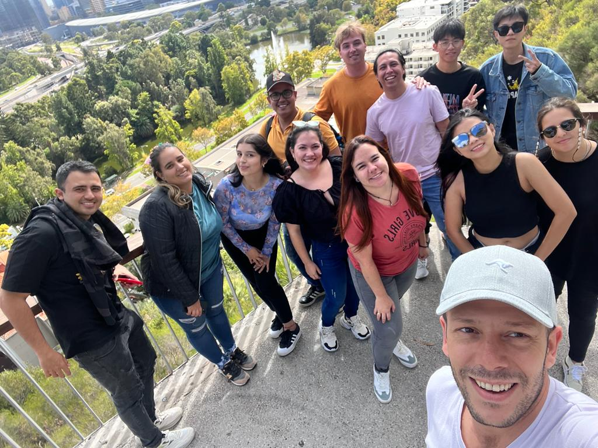
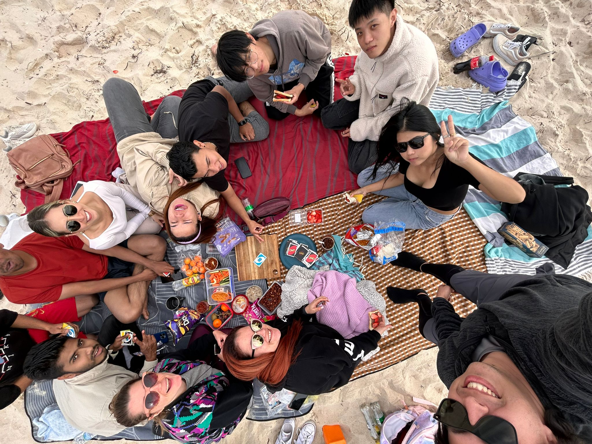
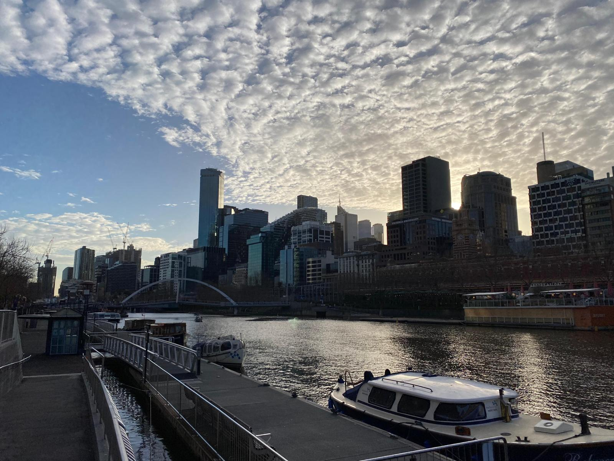
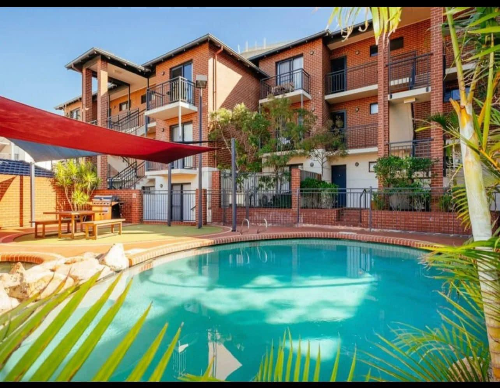
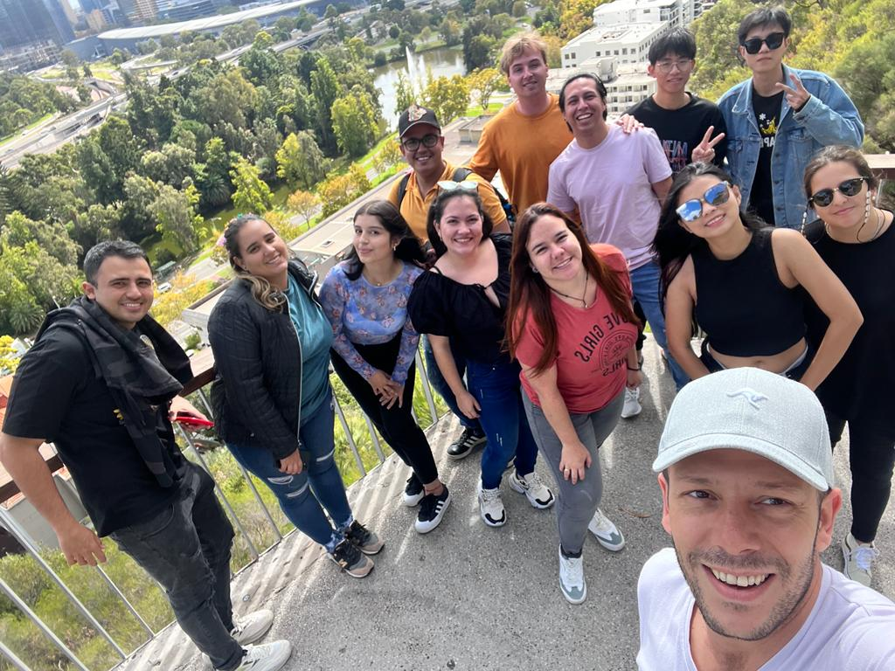
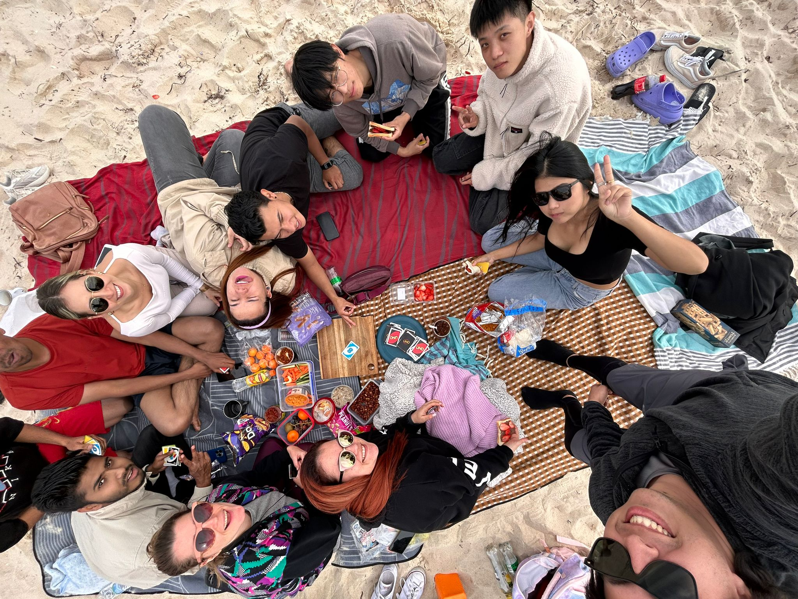
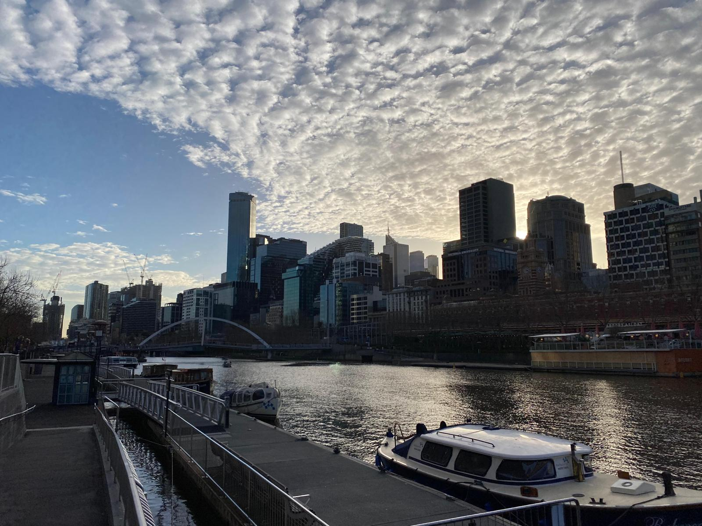
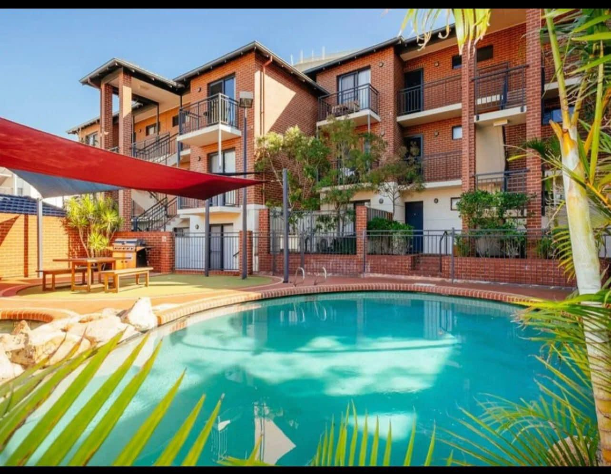
Ámsterdam, Países Bajos: Canales, bicicletas y arte 🚴
Llegar a Ámsterdam fue como entrar en un cuento. La ciudad, con sus canales, casas estrechas y bicicletas
por todas partes, tiene un encanto difícil de describir. Mi primera parada fue un paseo en bote por los
canales, desde donde pude apreciar la arquitectura histórica y la vida cotidiana de los neerlandeses.
Uno de los momentos más emocionantes fue visitar el Rijksmuseum, hogar de obras maestras como "La ronda
de noche" de Rembrandt. Cada cuadro parecía contar una historia que se conectaba con la ciudad misma.
También exploré el famoso barrio de Jordaan, donde me perdí en sus callejones llenos de cafés y pequeñas
tiendas. En un mercado local, probé stroopwafels recién hechos, que rápidamente se convirtieron en mi
snack favorito.
Una tarde, alquilé una bicicleta y pedaleé hasta el Vondelpark, donde me senté a leer mientras los patos
nadaban en el estanque cercano. Ámsterdam me enseñó a disfrutar de la simplicidad y a valorar los
pequeños momentos.
 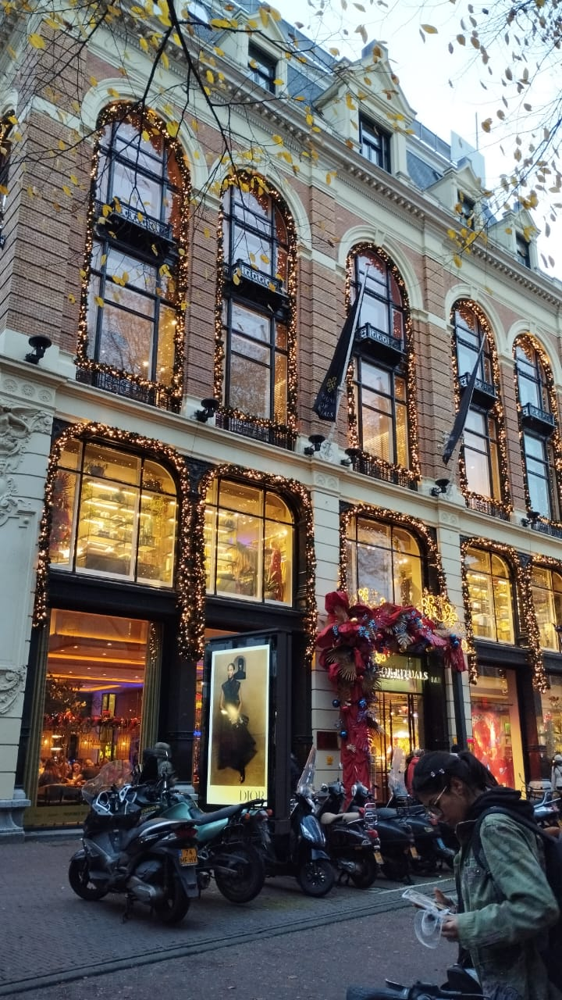
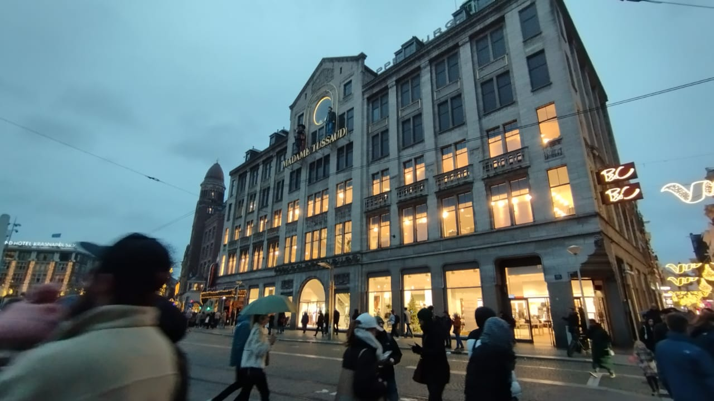
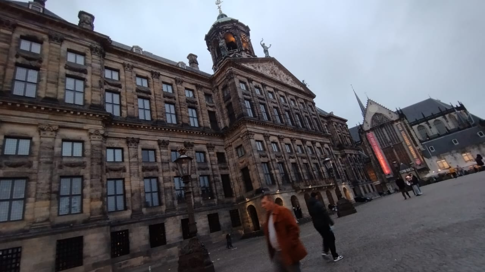
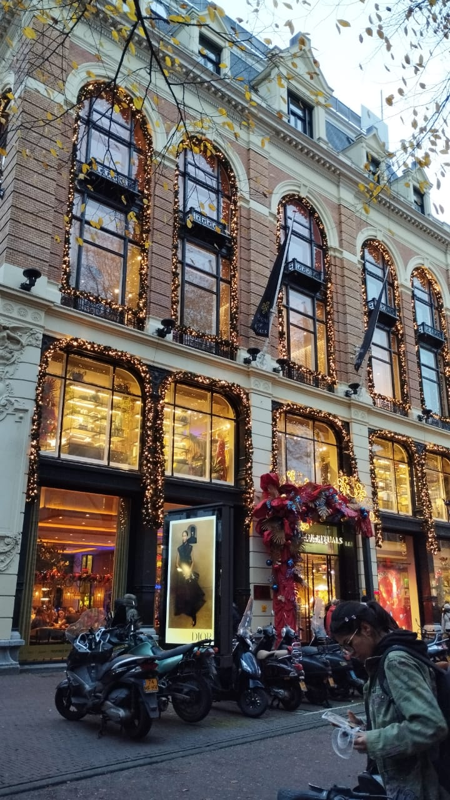
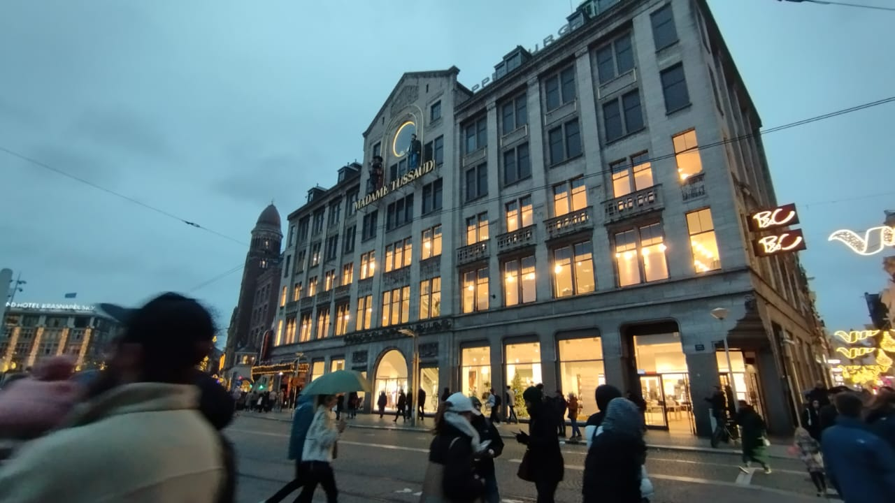
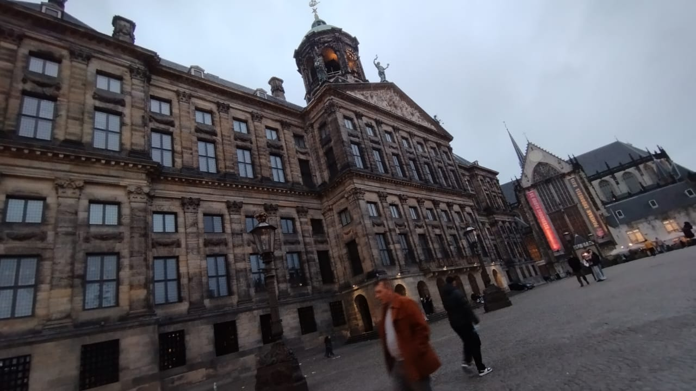
Valladolid, España: Mi rincón de historia y tranquilidad 🏰
Valladolid es mi hogar actual y uno de los lugares más especiales que he conocido. Esta ciudad, situada
en el corazón de Castilla y León, combina historia, cultura y una calma que me ha conquistado.
Mis días aquí suelen empezar con un café en la Plaza Mayor, rodeado de edificios históricos que cuentan
la historia de la ciudad. Valladolid fue cuna de grandes escritores como Miguel de Cervantes, y esa
riqueza cultural se respira en cada rincón.
Uno de mis lugares favoritos es el Campo Grande, un parque lleno de árboles centenarios, fuentes y pavos
reales que deambulan libremente. A menudo, llevo un libro y paso horas disfrutando de la paz del lugar.
La ciudad también es famosa por su gastronomía. Participar en una ruta de tapas por sus bares es una
experiencia que recomiendo a todo el mundo. Cada plato, desde la morcilla hasta el lechazo, es un regalo
para el paladar.
Reflexiones sobre mis aventuras
Cada uno de estos lugares me ha dejado una marca imborrable. El Lago Calima me enseñó a encontrar la
conexión con la naturaleza y la adrenalina; Perth me mostró la perfecta armonía entre ciudad y entorno;
Ámsterdam me hizo valorar la belleza de la vida simple; y Valladolid me ha dado un hogar lleno de
historia y sabor.
Espero que estas historias te inspiren a explorar, soñar y crear tus propias aventuras. ¡El mundo está
lleno de lugares increíbles esperando ser descubiertos!
¡Gracias por acompañarme en esta travesía! Espero que disfrutes tanto de mis historias como yo al vivirlas.